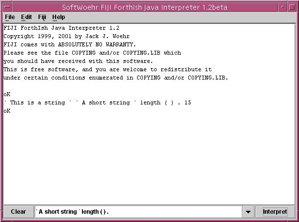

FIJI can load any Java class, instance
it, and manipulate it. Here's a simple example, a screen shot of FIJI manipulating
an object of the type java.lang.String. FIJI possesses inherent
syntax to push strings to the object reference stack. In the example, text
for interpretation is being entered in the command line box below the main
window. After the Interpret button is pressed, this input is echoed in
the main window and interpreter. Input is parsed left-to-right just as
in Forth. In the screen shot,
`A short string`is encountered and pushed to the object stack. Then the lexeme `length`is pushed to the object stack. FIJI doesn't care what these mean. But then the operators (and )are encountered by the parser which cause the lower of the two referents on the object reference stack (the java.lang.String `A short string`) to have the upper referent (length) called as a method name upon it. The two referents disappear from the object reference stack and the return from the method call is pushed to the stack in their place. Then the FIJI operator .is encountered by the parser which causes the top object reference stack item, in this case the number 15, to be printed, removing it from the object reference stack. The incidental item `This is a string` which happened to be on the stack when this operation started is still residing there at the end of this operation, undisturbed. |
 |